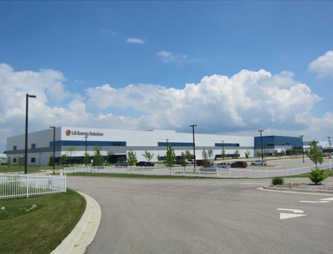

LG에너지솔루션이 4년 내 미국에 5조원 이상을 투자해 배터리 생산공장을 새로 짓는다. 바이든 미국 행정부의 그린뉴딜 및 친환경 정책에 따른 전기차 전환 가속화에 맞춰 선제적 투자를 단행한다는 계획이다.
12일 LG에너지솔루션은 5조원 이상을 투자해 오는 2025년까지 미국에 독자적으로 2곳 이상의 배터리 생산 공장을 짓는다고 밝혔다. 제네럴모터스(GM)과의 합작법인 2공장 투자도 올 상반기 중 결정한다. LG에너지솔루션이 4년 내 미국에 5조원 이상을 투자해 배터리 생산공장을 새로 짓는다. 바이든 미국 행정부의 그린뉴딜 및 친환경 정책에 따른 전기차 전환 가속화에 맞춰 선제적 투자를 단행한다는 계획이다.
12일 LG에너지솔루션은 5조원 이상을 투자해 오는 2025년까지 미국에 독자적으로 2곳 이상의 배터리 생산 공장을 짓는다고 밝혔다. 제네럴모터스(GM)과의 합작법인 2공장 투자도 올 상반기 중 결정한다.
배성수 한경닷컴 기자 baebae@hankyung.com